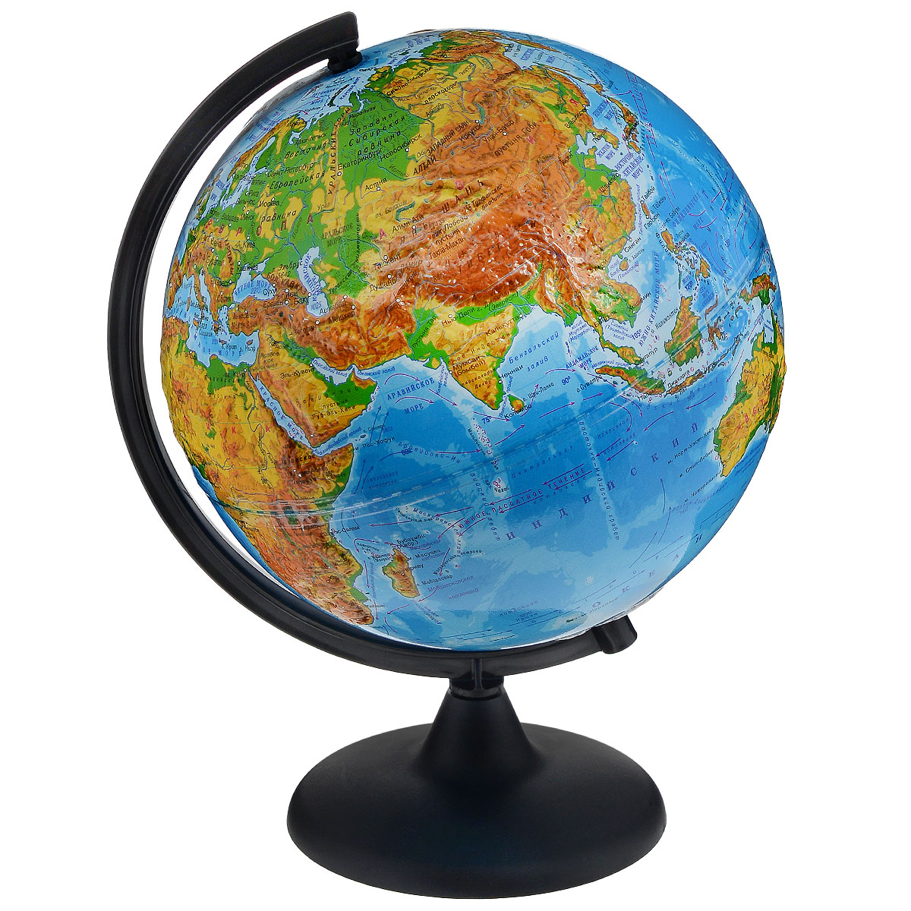
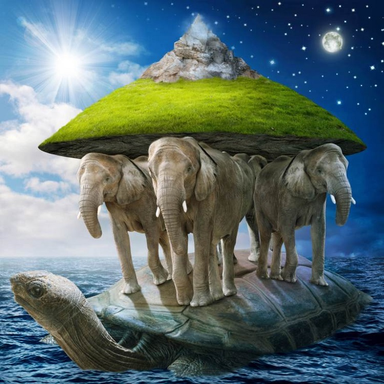
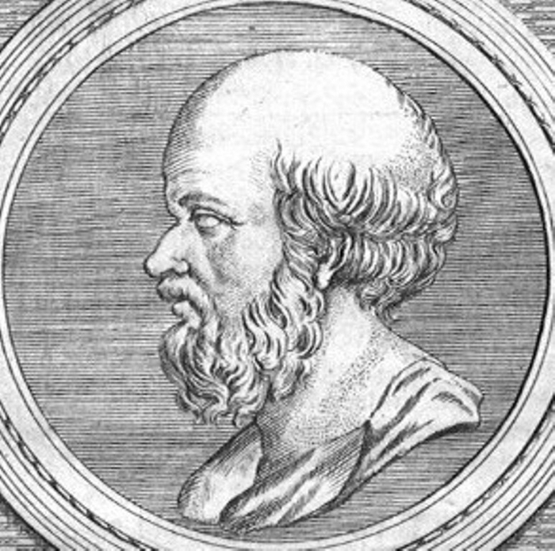
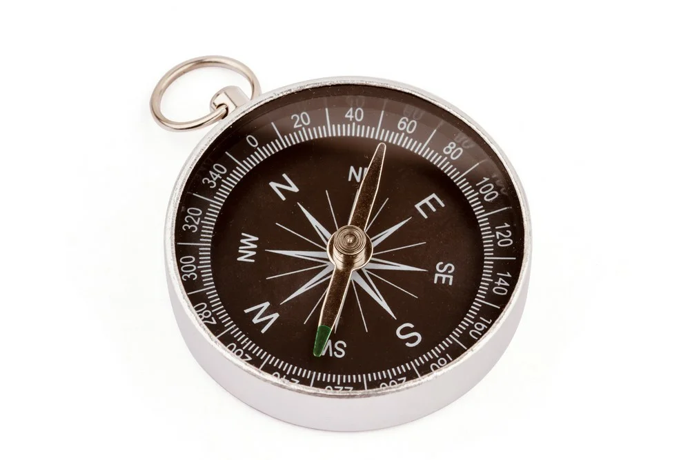

История географии
Вам кажется, что география — это наука прошлого? Что белых пятен на планете не осталось и романтика путешествий и открытий современному человеку недоступна? Поверьте, вы ошибаетесь. География по-прежнему может удивить и захватить не только подростка, мечтающего о лаврах первооткрывателя, но и взрослого! Представляете ли вы, сколько места занимает человечество в земном пространстве? Горы и океаны, девственные леса, безлюдные пустыни, огромные возделываемые поля, шахты, космодромы, все мегаполисы с их небоскребами — все это называется географической оболочкой, и составляет она всего один процент от объема Земли. Именно этот один процент и является предметом науки географии.  Глобус — трехмерная модель Земли, любой иной планеты или небесной сферы В древние времена, когда людям было так мало известно об окружающем мире, главной задачей географии было описание. Что находится на востоке от нашей деревни? А на западе от этого города? Куда попадешь, если поплывешь на лодке к северу? А если на юг? Так, буквально шаг за шагом, географы, сопровождавшие купеческие караваны и армии завоевателей, собирали сведения о Земле. Наивысшего расцвета эта наука достигла в эпоху Великих географических открытий. Путешественники пользовались покровительством королей, экспедиции щедро финансировались — ведь неизведанные земли сулили огромные сокровища. «География — это наука, прошедшая путь от романтики неведомого до ведения домашнего хозяйства Земли» (В. Кротов) Конечно, и сейчас в новостях мы время от времени слышим, что был открыт ранее неизвестный остров или найдено новое озеро, но, глядя на глобус, трудно поверить, что географии еще есть, что изучать всерьез. И все-таки перспективы у нее огромные. Географическая оболочка — чрезвычайно сложная система. Поэтому современная география распалась на множество специализированных направлений: изучение морей и океанов отдано океанологии, рельефа суши — геоморфологии, льдов — гляциологии и так далее. А все вместе они изучают взаимодействие всех разнообразных частей этой системы, как между собой, так и с человеком — что наиболее важно и значимо в настоящее время. Ведь хозяйственная деятельность человека: добыча полезных ископаемых, вырубка лесов, загрязнение атмосферы — является одной из главных причин изменения климата на планете.Предстваление о Земле древних людей
Сейчас каждому ребенку известно, что Земля имеет шарообразную форму. Но далеко не всегда это было очевидно. Древним людям было очевидно совсем другое: Земля плоская. В замечательной сказке о старике Хоттабыче пионер Волька, заколдованный древним джинном, говорит учительнице: «Если бы Земля была шаром, воды стекли бы с нее вниз, люди умерли бы от жажды, а растения засохли».  Представление древних: мир покоится на трех слонах, стоящих на огромной черепахе Например, в Древней Индии считали, что Земля покоится на спинах трех слонов, стоящих на спине черепахи, которая плывет по океану. Вавилоняне мыслили Землю огромной горой, поднимающейся из бесконечных вод. Древние евреи считали, что Земля — бесконечная равнина, под которой текут воды, а ветры приносят то дождь, то засуху...Родоначальники географии
 Эратосфен Киренский (276-194 гг. до н. э.) — древнегреческий математик, астроном и географ, основоположник географии как науки. Первым доказал,что Земля имеет форму шара В древности каждый путешественник в сущности являлся первооткрывателем. Война, торговля, да и просто извечное человеческое любопытство побуждали минойцев, финикийцев и многие другие народы пускаться в опаснейшие плавания по морю или походы по суше. Две тысячи лет назад египтяне исследовали центральные области Африки, побережья Средиземного и Красного морей. Чуть менее тысячи лет назад в Древнем Китае перед постройкой крепости составлялись подробные карты местности, а в III веке до нашей эры китайцам уже был известен компас. История сохранила для нас некоторые имена: Арриан, Страбон, Анаксимандр... Многие древнегреческие ученые внесли большой вклад в развитие географии. Но ее истинным родоначальником принято считать Эратосфена Киренского, который не только предположил, что Земля шарообразна, но и доказал это, применяя математические вычисления.<Географы древности:
Гекатей (546480 гг. до н. э.) — составил «Землеописание» на основе береговых лоцийГеродот (485425 гг. до н. э.) — путешествовал от Дона до порогов Нила. Путевые заметки легли в основу его знаменитой «Истории»
Аристотель (384-322 гг. до н. э.) — основатель гидрологии, метеорологии и океанологии
Эпоха Велики географических открытий
До XV века весь мир пользовался трудами греческих ученых: Страбона (ок. 64 г. до н. э. — ок. 23 г. н. э.) и Клавдия Птолемея (ок. 100 г. н. э. — ок. 170 г. н. э.). Первый создал колоссальный 17-томный труд по географии древнего мира, хранившийся в Александрийской библиотеке. Второй изучал, комментировал и дополнял работы Страбона с точки зрения астрономии, математики и механики.  Компас (от итал. compassare — измерять шагами) — магнитное устройство для определения сторон света. Впервые был подробно описан в китайской книге 1044 г., хотя изобретен раньше Но XV и XVI века стали временем огромного прорыва. Мир немыслимо расширился, распахнулся во все стороны: были открыты неведомые ранее острова и материки, реки, моря и океаны, новые народы и их культурные традиции, появились первые карты земного шара и первый географический атлас. Примерно тогда же, в конце XVI века, была создана одна из древнейших карт Российского государства — «Большой чертеж».Это время было названо эпохой Великих географических открытий, и мы поговорим о них в отдельной главе. «География — самая героическая и самая поэтическая из всех наук, наука о Земле и человеке, живущем на ней» (А. Казанцева)География в XVII-XIX века
Лазарев Михаил Петрович — русский адмирал, первооткрыватель Антарктиды В начале XIX в. корабли русского флота совершили ряд кругосветных путешествий. Эти экспедиции обогатили мировую науку крупнейшими географическими открытиями, в особенности в Тихом океане. Однако огромные пространства Южного полушария все еще оставались на карте «белым пятном». Не выяснен был вопрос и о существовании Южного материка.
В 1819 г. после длительной и очень тщательной подготовки из Кронштадта отправилась в дальнее плавание южная полярная экспедиция в составе двух военных шлюпов — «Восток» и «Мирный». Первым командовал Фаддей Фаддеевич Беллинсгаузен, вторым — Михаил Петрович Лазарев. Экипаж судов состоял из опытных, бывалых моряков.
Морское министерство назначило начальником экспедиции капитана Беллинсгаузена, имевшего уже за плечами большой опыт дальних морских плаваний.
Беллинсгаузен родился на о-ве Эзель (о-в Сарема в Эстонии) в 1779 г. «Я родился среди моря, — говорил он о себе впоследствии, — как рыба не может жить без воды, так и я не могу жить без моря».
В начале XIX в. корабли русского флота совершили ряд кругосветных путешествий. Эти экспедиции обогатили мировую науку крупнейшими географическими открытиями, в особенности в Тихом океане. Однако огромные пространства Южного полушария все еще оставались на карте «белым пятном». Не выяснен был вопрос и о существовании Южного материка.
В 1819 г. после длительной и очень тщательной подготовки из Кронштадта отправилась в дальнее плавание южная полярная экспедиция в составе двух военных шлюпов — «Восток» и «Мирный». Первым командовал Фаддей Фаддеевич Беллинсгаузен, вторым — Михаил Петрович Лазарев. Экипаж судов состоял из опытных, бывалых моряков.
Морское министерство назначило начальником экспедиции капитана Беллинсгаузена, имевшего уже за плечами большой опыт дальних морских плаваний.
Беллинсгаузен родился на о-ве Эзель (о-в Сарема в Эстонии) в 1779 г. «Я родился среди моря, — говорил он о себе впоследствии, — как рыба не может жить без воды, так и я не могу жить без моря».